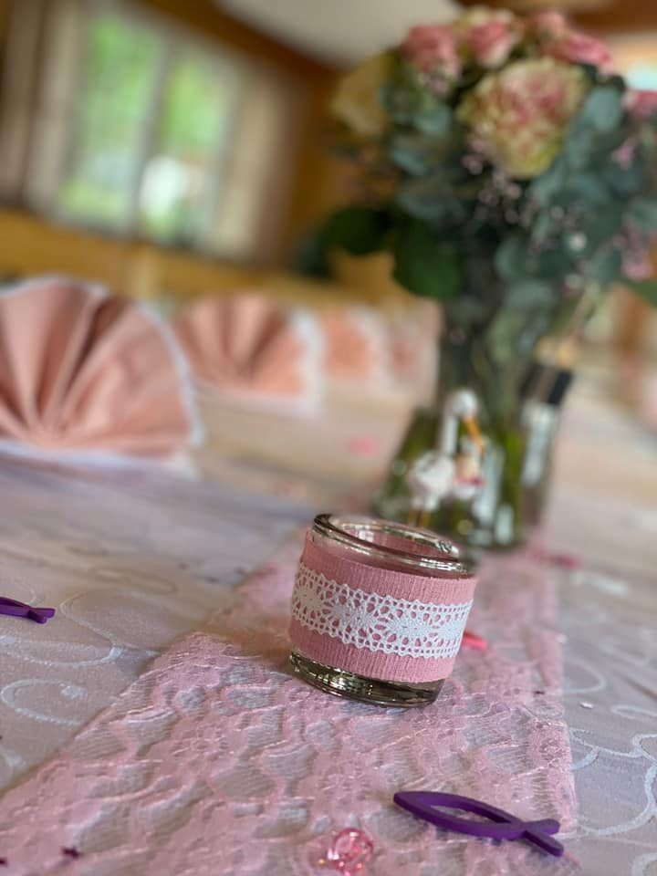
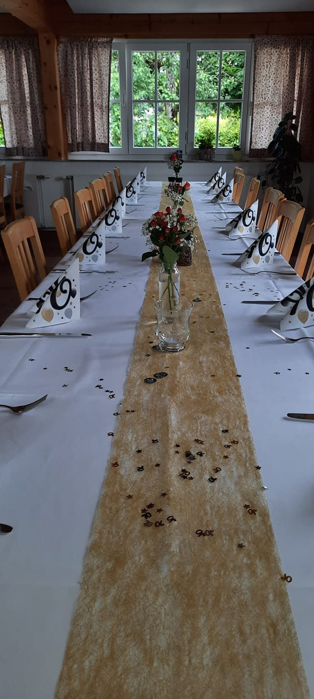
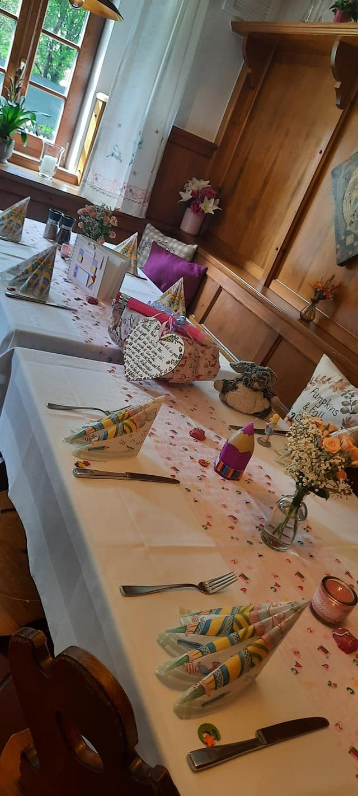

Galerie
Haus, Gastgarten und gedeckte Tafeln
Alle Bilder stammen von der bestehenden Website des Gasthaus Schneiderwirt. Sie zeigen das Haus im Ortszentrum von Altaussee, den Gastgarten und Tafeln, wie sie für Feiern gedeckt werden.





